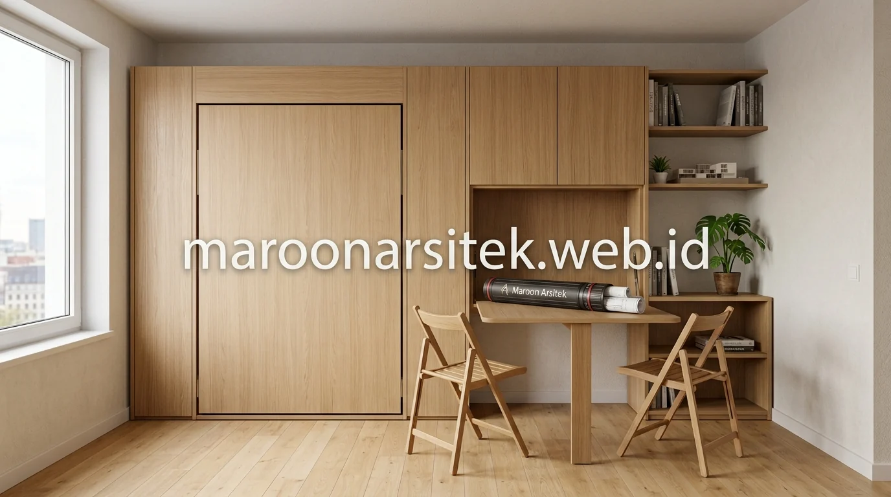

Unit studio dengan luas terbatas sering membuat penghuni harus mengorbankan salah satu kebutuhan, antara ruang tidur yang nyaman atau area makan yang memadai, padahal keduanya dapat dihadirkan melalui pendekatan desain furnitur yang tepat. Bersama layanan jasa desain interior profesional Maroon Arsitek, unit apartemen studio Anda disulap menjadi hunian modern yang lega dan multifungsi.
Kasur Lipat sebagai Solusi Ruang Tidur Multifungsi
Kasur lipat dirancang menyatu dengan dinding atau unit penyimpanan, sehingga area tidur dapat difungsikan sebagai ruang lain di siang hari tanpa perlu memisahkan zona tidur secara permanen dalam unit studio yang terbatas. Solusi ini menjadi kunci utama memaksimalkan fungsi ruang pada hunian dengan luas terbatas.
Mekanisme lipat dirancang dengan sistem penyangga yang aman dan mudah dioperasikan, memastikan kasur dapat dilipat dan dibuka kembali tanpa memerlukan tenaga berlebihan atau risiko kerusakan pada mekanisme dalam jangka panjang.
Penempatan kasur lipat disesuaikan dengan posisi yang memungkinkan ruang di sekitarnya tetap berfungsi optimal saat kasur dalam kondisi terlipat, seperti area kerja atau ruang duduk yang dapat digunakan pada siang hari tanpa terhalang furnitur tidur.
- Sistem Hidrolik Ringan: Membuka dan melipat ranjang tanpa beban berat berkat gas spring berkualitas.
- Dual Fungsi Ruang: Beralih seketika dari kamar tidur malam hari menjadi ruang kerja produktif di siang hari.
- Aman dan Terkunci: Dilengkapi mekanisme pengunci keselamatan otomatis saat kasur dalam posisi tegak pada jasa desain interior custom.
Integrasi Unit Penyimpanan pada Struktur Kasur Lipat
Kebutuhan penyimpanan tambahan pada unit studio dijawab melalui integrasi unit penyimpanan pada struktur kasur lipat, sehingga fungsi tidur dan penyimpanan dapat digabungkan dalam satu elemen furnitur tanpa menambah kebutuhan ruang terpisah.
Integrasi ini membantu memaksimalkan kapasitas penyimpanan barang penghuni, mengingat unit studio umumnya memiliki keterbatasan ruang untuk lemari atau rak tambahan di luar furnitur utama yang telah dirancang secara custom.
Meja Makan Gantung untuk Efisiensi Area Makan Studio
Meja makan gantung dirancang dapat dilipat ke arah dinding saat tidak digunakan, sehingga area makan tidak perlu menjadi zona permanen yang mengurangi ruang gerak dalam unit studio dengan luas terbatas. Solusi ini memberikan fleksibilitas tinggi dalam penggunaan ruang harian penghuni.
Mekanisme lipat pada meja makan menggunakan engsel dan penyangga yang disesuaikan dengan beban penggunaan sehari-hari, memastikan meja tetap stabil saat digunakan meski dalam kondisi terpasang sementara pada dinding.
Penempatan meja makan gantung biasanya diposisikan berdekatan dengan area dapur, sehingga alur penggunaan dari memasak hingga makan tetap efisien tanpa memerlukan pergerakan jauh dalam ruang studio yang kompak.

Kombinasi Meja Lipat dengan Kursi Portable
Kebutuhan fleksibilitas tambahan pada area makan dijawab melalui kombinasi meja lipat dengan kursi portable yang dapat disimpan secara ringkas saat tidak digunakan, sehingga ruang tetap lapang di luar waktu makan.
Kombinasi ini memungkinkan area makan diaktifkan hanya saat dibutuhkan, sementara di waktu lain ruang tersebut dapat difungsikan untuk aktivitas lain sesuai kebutuhan penghuni unit studio dengan penataan lighting interior modern yang tepat.
Kitchen Set Custom sesuai Dimensi Unit Studio
Kitchen set custom dirancang sesuai dimensi aktual dapur pada unit studio, memaksimalkan kapasitas penyimpanan dan area kerja memasak tanpa mengorbankan ruang gerak di area dapur yang umumnya berukuran terbatas. Pendekatan custom ini berbeda dari kitchen set standar yang belum tentu sesuai proporsi unit studio.
Perancangan kitchen set mempertimbangkan alur kerja memasak, mulai dari area persiapan, memasak, hingga pencucian, agar tetap efisien meski berada dalam ruang yang kompak dan berdekatan dengan fungsi ruang lain dalam unit studio.
Pemilihan material kitchen set turut disesuaikan dengan kondisi ruang yang cenderung lembap akibat aktivitas memasak, memastikan daya tahan furnitur tetap terjaga meski digunakan dalam ruang dengan sirkulasi udara terbatas.
Penyesuaian Kapasitas Penyimpanan dengan Kebutuhan Penghuni
Kebutuhan penyimpanan peralatan dapur yang sesuai kebiasaan penghuni dijawab melalui perancangan kitchen set custom yang mempertimbangkan jumlah dan jenis peralatan yang biasa digunakan, bukan mengikuti standar kapasitas penyimpanan umum yang belum tentu sesuai kebutuhan.
Penyesuaian ini memastikan kitchen set benar-benar fungsional bagi penghuni, tanpa ruang penyimpanan yang terbuang percuma maupun kekurangan kapasitas untuk peralatan yang sering digunakan sehari-hari bersama tim jasa arsitek dan interior kami.